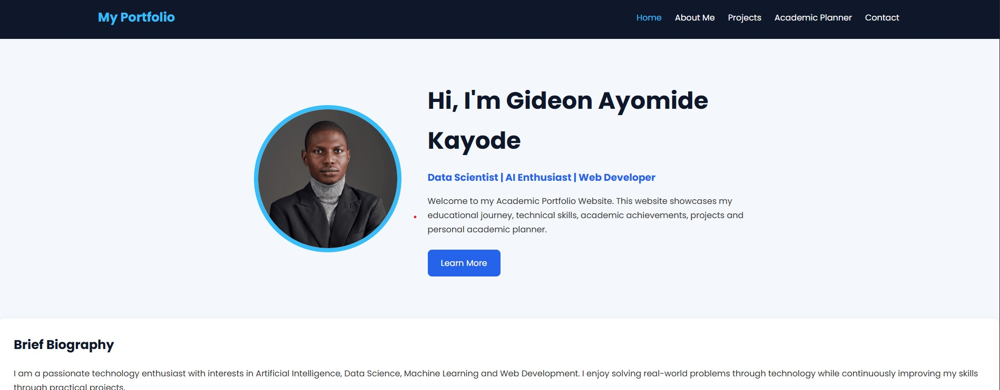

My Projects
Below are some of the projects I have worked on during my academic journey and personal learning. These projects demonstrate my knowledge of programming, data science, web development and problem-solving.

Project Summary
| Project | Technology Used | Status |
|---|---|---|
| Airline Delay Prediction | Python, Scikit-learn | Completed |
| Diabetes Prediction | Python, Pandas | Completed |
| Student Management Dashboard | HTML, CSS, JavaScript | Completed |
Upcoming Projects
- AI-powered Student Result Predictor
- University Attendance System
- Personal Finance Tracker
- E-Learning Management System